운전면허-학과시험(필기)-1종-2종(2020년판) (1100-08-00 기출문제)
1과목: 임의구분
1. 다음 상황에서 우회전하는 경우 가장 안전한 운전 방법 2가지는? (답이 두개인 문제입니다. 정답은 1, 2번 입니다. 여기서는 1번을 누르면 정답 처리 됩니다.)
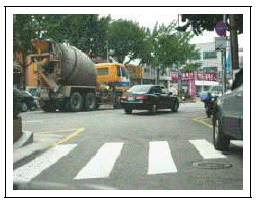
- 전방 우측에 주차된 차량의 출발에 대비하여야 한다.
- 전방 우측에서 보행자가 갑자기 뛰어나올 것에 대비한다.
- 신호에 따르는 경우 전방 좌측의 진행 차량에 대비할 필요는 없다.
- 서행하면 교통 흐름에 방해를 줄 수 있으므로 신속히 통과한다.
- 우측에 불법 주차된 차량에서는 사람이 나올 수 없으므로 속도를 높여 주행한다.
(정답률: 83%)

2. 전방에 고장 난 버스가 있는 상황에서 가장 안전한 운전 방법 2가지는? (답이 두개인 문제입니다. 정답은 2, 3번 입니다. 여기서는 2번을 누르면 정답 처리 됩니다.)
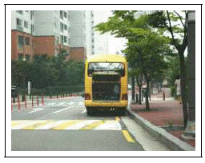
- 경음기를 울리며 급제동하여 정지한다.
- 버스와 거리를 두고 안전을 확인한 후 좌측 차로를 이용해 서행한다.
- 좌측 후방에 주의하면서 좌측 차로로 서서히 차로 변경을 한다.
- 비상 점멸등을 켜고 속도를 높여 좌측 차로로 차로 변경을 한다.
- 좌측 차로로 차로 변경한 후 그대로 빠르게 주행해 나간다.
(정답률: 83%)
3. 다음과 같은 도로에서 가장 안전한 운전 방법 2가지는? (답이 두개인 문제입니다. 정답은 1, 4번 입니다. 여기서는 1번을 누르면 정답 처리 됩니다.)
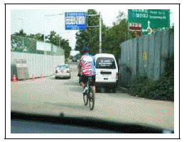
- 앞서 가는 자전거가 갑자기 도로 중앙 쪽으로 들어올 수 있으므로 자전거의 움직임에 주의한다.
- 자전거 앞 우측의 차량은 주차되어 있어 특별히 주의할 필요는 없다.
- 한적한 도로이므로 도로의 좌ㆍ우측 상황은 무시하고 진행한다.
- 자전거와의 안전거리를 충분히 유지하며 서행한다.
- 경음기를 울려 자전거에 주의를 주고 앞지른다.
(정답률: 78%)
4. 다음 상황에서 가장 안전한 운전방법 2가지는? (답이 두개인 문제입니다. 정답은 1, 3번 입니다. 여기서는 1번을 누르면 정답 처리 됩니다.)
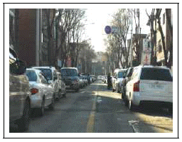
- 주차된 차량들 중에서 갑자기 출발하는 차가 있을 수 있으므로 좌우를 잘 살피면서 서행한다.
- 주차 금지 구역이긴 하나 전방 우측의 흰색 차량 뒤에 공간이 있으므로 주차하면 된다.
- 반대 방향에서 언제든지 차량이 진행해 올 수 있으므로 우측으로 피할 수 있는 준비를 한다.
- 뒤따라오는 차량에게 불편을 주지 않도록 최대한 빠르게 통과하거나 주차한다.
- 중앙선을 넘어서 주행해 오는 차량이 있을 수 있으므로 자신이 먼저 중앙선을 넘어 신속히 통과한다.
(정답률: 78%)
5. 다음과 같은 도로 상황에서 가장 안전한 운전방법 2가지는? (답이 두개인 문제입니다. 정답은 1, 5번 입니다. 여기서는 1번을 누르면 정답 처리 됩니다.)
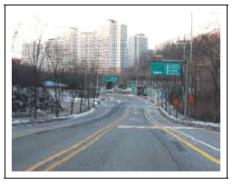
- 속도를 줄여 과속방지턱을 통과한다.
- 과속방지턱을 신속하게 통과한다.
- 서행하면서 과속방지턱을 통과한 후 가속하며 횡단보도를 통과한다.
- 계속 같은 속도를 유지하며 빠르게 주행한다.
- 속도를 줄여 횡단보도를 안전하게 통과한다.
(정답률: 72%)
6. 다음 상황에서 가장 안전한 운전방법 2가지는? (답이 두개인 문제입니다. 정답은 2, 4번 입니다. 여기서는 2번을 누르면 정답 처리 됩니다.)
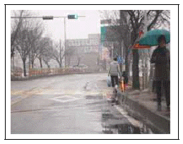
- 빗길에서는 브레이크 페달을 여러 번 나누어 밟는 것보다는 급제동하는 것이 안전하다.
- 물이 고인 곳을 지날 때에는 보행자나 다른 차에게 물이 튈 수 있으므로 속도를 줄여서 주행한다.
- 과속방지턱 직전에서 급정지한 후 주행한다.
- 전방 우측에 우산을 들고 가는 보행자가 차도로 들어올 수 있으므로 충분한 거리를 두고 서행한다.
- 우산을 쓰고 있는 보행자는 보도 위에 있으므로 신경 쓸 필요가 없다.
(정답률: 77%)
7. 보행자가 횡단보도를 건너는 중이다. 가장 안전한 운전방법 2가지는? (답이 두개인 문제입니다. 정답은 1, 3번 입니다. 여기서는 1번을 누르면 정답 처리 됩니다.)
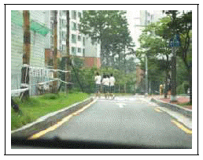
- 보행자가 안전하게 횡단하도록 정지선에 일시정지한다.
- 빠른 속도로 빠져나간다.
- 횡단보도 우측에서 갑자기 뛰어드는 보행자에 주의한다.
- 횡단보도 접근 시 보행자의 주의를 환기하기 위해 경음기를 여러 번 사용한다.
- 좌측 도로에서 차량이 접근할 수 있으므로 경음기를 반복하여 사용한다.
(정답률: 69%)
8. 전방에 마주 오는 차량이 있는 상황에서 가장 안전한 운전방법 2가지는? (답이 두개인 문제입니다. 정답은 3, 5번 입니다. 여기서는 3번을 누르면 정답 처리 됩니다.)
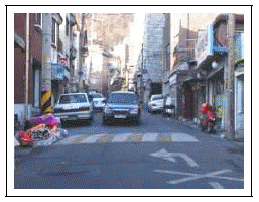
- 상대방이 피해 가도록 그대로 진행한다.
- 전조등을 번쩍거리면서 경고한다.
- 통과할 수 있는 공간을 확보하여 준다.
- 경음기를 계속 사용하여 주의를 주면서 신속하게 통과하게 한다.
- 골목길에서도 보행자가 나올 수 있으므로 속도를 줄인다.
(정답률: 70%)
9. 다음 상황에서 가장 안전한 운전방법 2가지는? (답이 두개인 문제입니다. 정답은 2, 4번 입니다. 여기서는 2번을 누르면 정답 처리 됩니다.)
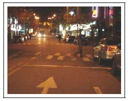
- 보행자의 횡단이 끝나가므로 그대로 통과한다.
- 반대 차의 전조등에 현혹되지 않도록 하고 보행자에 주의한다.
- 전조등을 상하로 움직여 보행자에게 주의를 주며 통과한다.
- 서행하며 횡단보도 앞에서 일시정지하여야한다.
- 시야 확보를 위해 상향등을 켜고 운전한다.
(정답률: 62%)
10. 비오는 날 횡단보도에 접근하고 있다. 다음 상황에서 가장 안전한 운전 방법 2가지는? (답이 두개인 문제입니다. 정답은 2, 4번 입니다. 여기서는 2번을 누르면 정답 처리 됩니다.)
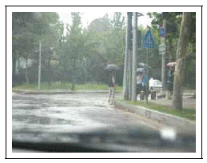
- 물방울이나 습기로 전방을 보기 어렵기 때문에 신속히 통과한다.
- 비를 피하기 위해 서두르는 보행자를 주의한다.
- 차의 접근을 알리기 위해 경음기를 계속해서 사용하며 진행한다.
- 우산에 가려 차의 접근을 알아차리지 못하는 보행자를 주의한다.
- 빗물이 고인 곳을 통과할 때는 미끄러질 위험이 있으므로 급제동하여 정지한 후 통과한다.
(정답률: 65%)
11. 편도 2차로 오르막 커브 길에서 가장 안전한 운전 방법 2가지는? (답이 두개인 문제입니다. 정답은 1, 4번 입니다. 여기서는 1번을 누르면 정답 처리 됩니다.)
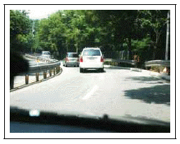
- 앞차와의 거리를 충분히 유지하면서 진행한다.
- 앞차의 속도가 느릴 때는 2대의 차량을 동시에 앞지른다.
- 커브 길에서의 원심력에 대비해 속도를 높인다.
- 전방 1차로 차량의 차로 변경이 예상되므로 속도를 줄인다.
- 전방 1차로 차량의 차로 변경이 예상되므로 속도를 높인다.
(정답률: 76%)
12. 다음과 같은 지방 도로를 주행 중이다. 가장 안전한 운전 방법 2가지는? (답이 두개인 문제입니다. 정답은 1, 3번 입니다. 여기서는 1번을 누르면 정답 처리 됩니다.)
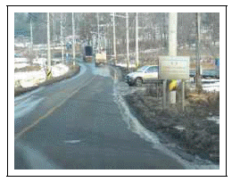
- 언제든지 정지할 수 있는 속도로 주행한다.
- 반대편 도로에 차량이 없으므로 전조등으로 경고하면서 그대로 진행한다.
- 전방 우측 도로에서 차량 진입이 예상되므로 속도를 줄이는 등 후속 차량에도 이에 대비토록 한다.
- 전방 우측 도로에서 진입하고자 하는 차량이 우선이므로 모든 차는 일시정지하여 우측 도로차에 양보한다.
- 직진 차가 우선이므로 경음기를 계속 울리면서 진행한다.
(정답률: 68%)
13. 다음 상황에서 가장 안전한 운전방법 2가지는? (답이 두개인 문제입니다. 정답은 2, 5번 입니다. 여기서는 2번을 누르면 정답 처리 됩니다.)
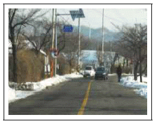
- 반대편 차량의 앞지르기는 불법이므로 경음기를 사용하면서 그대로 주행한다.
- 반대편 앞지르기 중인 차량이 통과한 후 우측의 보행자에 주의하면서 커브길을 주행한다.
- 커브길은 신속하게 진입해서 천천히 빠져 나가는 것이 안전하다.
- 커브길은 중앙선에 붙여서 운행하는 것이 안전하다.
- 반대편 앞지르기 중인 차량이 안전하게 앞지르기 할 수 있도록 속도를 줄이며 주행한다.
(정답률: 70%)
14. Y자형 교차로에서 좌회전해야 하는 경우 가장 안전한 운전방법 2가지는? (답이 두개인 문제입니다. 정답은 4, 5번 입니다. 여기서는 4번을 누르면 정답 처리 됩니다.)
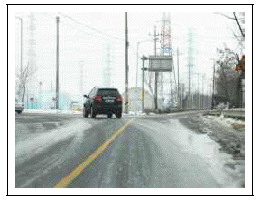
- 반대편 도로에 차가 없을 경우에는 황색 실선의 중앙선을 넘어가도 상관없다.
- 교차로 직전에 좌측 방향 지시등을 작동한다.
- 교차로를 지나고 나서 좌측 방향 지시등을 작동한다.
- 교차로에 이르기 전 30미터 이상의 지점에서 좌측 방향 지시등을 작동한다.
- 좌측 방향지시등 작동과 함께 주변 상황을 충분히 살펴 안전을 확인한 후 통과한다.
(정답률: 63%)
15. 다음 상황에서 시내버스가 출발하지 않을 때 가장 안전한 운전방법 2가지는? (답이 두개인 문제입니다. 정답은 2, 3번 입니다. 여기서는 2번을 누르면 정답 처리 됩니다.)
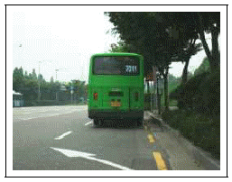
- 정차한 시내버스가 빨리 출발할 수 있도록 경음기를 반복하여 사용한다.
- 정지 상태에서 고개를 돌려 뒤따르는 차량이 진행해 오는지 확인한다.
- 좌측 방향지시등을 켜고 후사경을 보면서 안전을 확인한 후 차로 변경한다.
- 좌측 차로에서 진행하는 차와 사고가 발생할 수 있기 때문에 급차로 변경한다.
- 버스에서 내린 사람이 무단 횡단할 수 있으므로 버스 앞으로 빠르게 통과한다.
(정답률: 66%)
16. 다음과 같은 도로 상황에서 가장 안전한 운전방법 2가지는? (답이 두개인 문제입니다. 정답은 3, 5번 입니다. 여기서는 3번을 누르면 정답 처리 됩니다.)
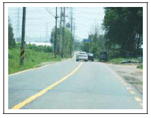
- 앞차가 앞지르기 금지 구간에서 앞지르기하고 있으므로 경음기를 계속 사용하여 이를 못하게 한다.
- 앞차가 앞지르기를 하고 있으므로 교통 흐름을 원활하게 하기 위해 자신도 그 뒤를 따라 앞지르기한다.
- 중앙선이 황색 실선 구간이므로 앞지르기 해서는 안 된다.
- 교통 흐름상 앞지르기하고 있는 앞차를 바싹 따라가야 한다.
- 전방 우측에 세워진 차량이 언제 출발할지 알 수 없으므로 주의하며 운전한다.
(정답률: 63%)
17. 고갯마루 부근에서 가장 안전한 운전방법 2가지는? (답이 두개인 문제입니다. 정답은 2, 5번 입니다. 여기서는 2번을 누르면 정답 처리 됩니다.)
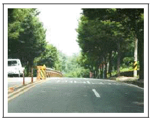
- 현재 속도를 그대로 유지한다.
- 무단 횡단하는 사람 등이 있을 수 있으므로 주의하며 주행한다.
- 속도를 높여 진행한다.
- 내리막이 보이면 기어를 중립에 둔다.
- 급커브와 연결된 구간이므로 속도를 줄여 주행한다.
(정답률: 64%)
18. 회전교차로에서 가장 안전한 운전방법 2가지는? (답이 두개인 문제입니다. 정답은 1, 4번 입니다. 여기서는 1번을 누르면 정답 처리 됩니다.)
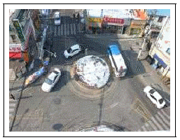
- 회전하는 차량이 우선이므로 진입차량이 양보한다.
- 직진하는 차량이 우선이므로 그대로 진입한다.
- 회전하는 차량에 경음기를 사용하며 진입한다.
- 회전차량은 진입차량에 주의하면서 회전한다.
- 첫 번째 회전차량이 지나간 다음 바로 진입한다.
(정답률: 64%)
19. 전방 버스를 앞지르기 하고자 한다. 가장 안전한 운전방법 2가지는? (답이 두개인 문제입니다. 정답은 2, 3번 입니다. 여기서는 2번을 누르면 정답 처리 됩니다.)
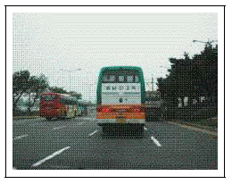
- 앞차의 우측으로 앞지르기 한다.
- 앞차의 좌측으로 앞지르기 한다.
- 전방버스가 앞지르기를 시도할 경우 동시에 앞지르기 하지 않는다.
- 뒤차의 진행에 관계없이 급차로 변경하여 앞지르기 한다.
- 법정속도 이상으로 앞지르기 한다.
(정답률: 58%)
20. 황색점멸신호의 교차로에서 가장 안전한 운전방법 2가지는? (답이 두개인 문제입니다. 정답은 1, 5번 입니다. 여기서는 1번을 누르면 정답 처리 됩니다.)
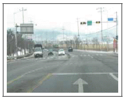
- 주변차량의 움직임에 주의하면서 서행한다.
- 위험예측을 할 필요가 없이 진행한다.
- 교차로를 그대로 통과한다.
- 전방 좌회전하는 차량은 주의하지 않고 그대로 진행한다.
- 횡단보도를 건너려는 보행자가 있는지 확인한다.
(정답률: 62%)
2과목: 임의구분
21. 오르막 커브길 우측에 공사 중 표지판이 있다. 가장 안전한 운전방법 2가지는? (답이 두개인 문제입니다. 정답은 1, 3번 입니다. 여기서는 1번을 누르면 정답 처리 됩니다.)
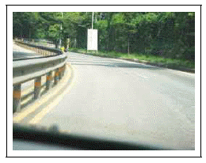
- 공사 중이므로 전방 상황을 잘 주시한다.
- 차량 통행이 한산하기 때문에 속도를 줄이지 않고 진행한다.
- 커브길이므로 속도를 줄여 진행한다.
- 오르막길이므로 속도를 높인다.
- 중앙분리대와의 충돌위험이 있으므로 차선을 밟고 주행한다.
(정답률: 58%)
22. 교외지역을 주행 중 다음과 같은 상황에서 안전한 운전방법 2가지는? (답이 두개인 문제입니다. 정답은 1, 5번 입니다. 여기서는 1번을 누르면 정답 처리 됩니다.)
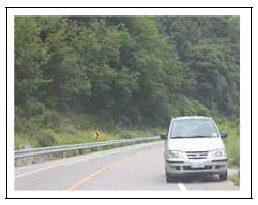
- 우로 굽은 길의 앞쪽 상황을 확인할 수 없으므로 서행한다.
- 우측에 주차된 차량을 피해 재빠르게 중앙선을 넘어 통과한다.
- 제한속도 범위를 초과하여 빠르게 빠져 나간다.
- 원심력으로 중앙선을 넘어갈 수 있기 때문에 길 가장자리 구역선에 바싹 붙어 주행한다.
- 주차된 차량 뒤쪽에서 사람이 갑자기 나타날 수도 있으므로 서행으로 통과한다.
(정답률: 59%)
23. 고속도로를 주행 중 다음과 같은 상황에서 가장 안전한 운전 방법 2가지는? (답이 두개인 문제입니다. 정답은 1, 2번 입니다. 여기서는 1번을 누르면 정답 처리 됩니다.)
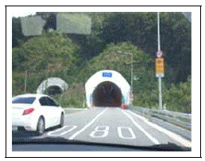
- 터널 입구에서는 횡풍(옆바람)에 주의하며 속도를 줄인다.
- 터널에 진입하기 전 야간에 준하는 등화를 켠다.
- 색안경을 착용한 상태로 운행한다.
- 옆 차로의 소통이 원활하면 차로를 변경한다.
- 터널 속에서는 속도감을 잃게 되므로 빠르게 통과한다.
(정답률: 60%)
24. 고속도로를 주행 중 다음과 같은 상황에서 가장 안전한 운전 방법 2가지는? (답이 두개인 문제입니다. 정답은 1, 5번 입니다. 여기서는 1번을 누르면 정답 처리 됩니다.)
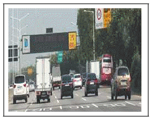
- 제한속도 90킬로미터 미만으로 주행한다.
- 최고속도를 초과하여 주행하다가 무인 단속장비 앞에서 속도를 줄인다.
- 안전표지의 제한속도보다 법정속도가 우선 이므로 매시 100킬로미터로 주행한다.
- 화물차를 앞지르기 위해 매시 100킬로미터의 속도로 신속히 통과한다.
- 전방의 화물차가 갑자기 속도를 줄이는 것에 대비하여 안전거리를 확보한다.
(정답률: 50%)
25. 다음과 같은 교외지역을 주행할 때 가장 안전한 운전 방법 2가지는? (답이 두개인 문제입니다. 정답은 2, 5번 입니다. 여기서는 2번을 누르면 정답 처리 됩니다.)
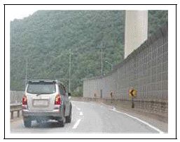
- 앞차가 매연이 심하기 때문에 그 차의 앞으로 급차로 변경하여 정지시킨다.
- 속도를 높이면 우측 방호벽에 부딪힐 수도 있으므로 속도를 줄인다.
- 좌측 차량이 원심력으로 우측으로 넘어올 수도 있으므로 속도를 높여 그 차보다 빨리 지나간다.
- 앞쪽 도로가 3개 차로로 넓어지기 때문에 속도를 높여 주행하여야 한다.
- 좌측차로에서 주행 중인 차량으로 인해 진행 차로의 앞 쪽 상황을 확인하기 어렵기 때문에 속도를 줄여 주행한다.
(정답률: 51%)
26. 진출로로 나가려고 할 때 가장 안전한 운전방법 2가지는? (답이 두개인 문제입니다. 정답은 2, 4번 입니다. 여기서는 2번을 누르면 정답 처리 됩니다.)
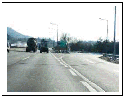
- 안전지대에 일시정지한 후 진출한다.
- 백색점선 구간에서 진출한다.
- 진출로를 지나치면 차량을 후진해서라도 진출을 시도한다.
- 진출하기 전 미리 감속하여 진입한다.
- 진출 시 앞 차량이 정체되면 안전지대를 통과해서 빠르게 진출을 시도한다.
(정답률: 54%)
27. 3차로에서 2차로로 차로를 변경하려고 한다. 가장 안전한 운전방법 2가지는? (답이 두개인 문제입니다. 정답은 2, 5번 입니다. 여기서는 2번을 누르면 정답 처리 됩니다.)
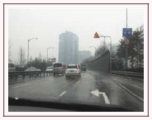
- 2차로에 진입할 때는 속도를 최대한 줄인다.
- 2차로에서 주행하는 차량의 위치나 속도를 확인 후 진입한다.
- 다소 위험하더라도 급차로 변경을 한다.
- 2차로에 진입할 때는 경음기를 사용하여 경고 후 진입한다.
- 차로를 변경하기 전 미리 방향지시등을 켜고 안전을 확인한 후 진입한다.
(정답률: 55%)
28. 지하차도 입구로 진입하고 있다. 가장 안전한 운전방법 2가지는? (답이 두개인 문제입니다. 정답은 1, 2번 입니다. 여기서는 1번을 누르면 정답 처리 됩니다.)
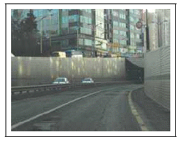
- 지하차도 안에서는 앞차와 안전거리를 유지하면서 주행한다.
- 전조등을 켜고 전방을 잘 살피면서 안전한 속도로 주행한다.
- 지하차도 안에서는 교통 흐름을 고려하여 속도가 느린 다른 차를 앞지르기한다.
- 지하차도 안에서는 속도감이 빠르게 느껴지므로 앞차의 전조등에 의존하며 주행한다.
- 다른 차가 끼어들지 못하도록 앞차와의 거리를 좁혀 주행한다.
(정답률: 54%)
29. 다음 상황에서 가장 안전한 운전방법 2가지는? (답이 두개인 문제입니다. 정답은 3, 4번 입니다. 여기서는 3번을 누르면 정답 처리 됩니다.)
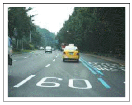
- 2차로에 화물 차량이 주행하고 있으므로 버스전용차로를 이용하여 앞지르기한다.
- 2차로에 주행 중인 화물 차량 앞으로 신속하게 차로변경 한다.
- 운전 연습 차량의 진행에 주의하며 감속 운행한다.
- 2차로의 화물 차량 뒤쪽으로 안전하게 차로 변경한 후 주행한다.
- 운전 연습 차량이 속도를 높이도록 경음기를 계속 사용한다.
(정답률: 59%)
30. 차로변경하려는 차가 있을 때 가장 안전한 운전방법 2가지는? (답이 두개인 문제입니다. 정답은 4, 5번 입니다. 여기서는 4번을 누르면 정답 처리 됩니다.)
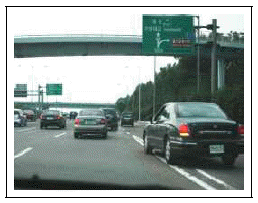
- 경음기를 계속 사용하여 차로변경을 못하게 한다.
- 가속하여 앞차 뒤로 바싹 붙는다.
- 사고 예방을 위해 좌측 차로로 급차로 변경한다.
- 차로변경을 할 수 있도록 공간을 확보해 준다.
- 후사경을 통해 뒤차의 상황을 살피며 속도를 줄여 준다.
(정답률: 50%)
31. 전방 교차로를 지나 우측 고속도로 진입로로 진입하고자 할 때 가장 안전한 운전방법 2가지는? (답이 두개인 문제입니다. 정답은 1, 5번 입니다. 여기서는 1번을 누르면 정답 처리 됩니다.)
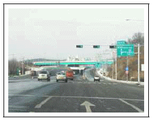
- 교차로 우측 도로에서 우회전하는 차량에 주의한다.
- 계속 직진하다가 진입로 직전에서 차로 변경하여 진입한다.
- 진입로 입구 횡단보도에서 일시정지한 후 천천히 진입한다.
- 진입로를 지나쳐 통과했을 경우 비상 점멸등을 켜고 후진하여 진입한다.
- 교차로를 통과한 후 우측 후방의 안전을 확인하고 천천히 우측으로 차로를 변경하여 진입한다.
(정답률: 56%)
32. 다음 상황에서 가장 안전한 운전방법 2가지는? (답이 두개인 문제입니다. 정답은 2, 3번 입니다. 여기서는 2번을 누르면 정답 처리 됩니다.)
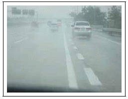
- 전방 우측 차가 신속히 진입할 수 있도록 내차의 속도를 높여 먼저 통과한다.
- 전방 우측 차가 안전하게 진입할 수 있도록 속도를 줄이며 주행한다.
- 전방 우측 차가 급진입 시 미끄러질 수 있으므로 안전거리를 충분히 두고 주행한다.
- 전방 우측에서는 진입할 수 없는 차로이므로 경음기를 사용하며 주의를 환기시킨다.
- 진입 차량이 양보를 해야 하므로 감속 없이 그대로 진행한다.
(정답률: 53%)
33. 다음 자동차 전용도로(주행차로 백색실선)에서 차로변경에 대한 설명으로 맞는 2가지는? (답이 두개인 문제입니다. 정답은 2, 4번 입니다. 여기서는 2번을 누르면 정답 처리 됩니다.)
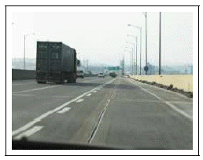
- 2차로를 주행 중인 화물차는 1차로로 차로 변경을 할 수 있다.
- 2차로를 주행 중인 화물차는 3차로로 차로 변경을 할 수 없다.
- 3차로에서 가속 차로로 차로변경을 할 수 있다.
- 가속 차로에서 3차로로 차로변경을 할 수 있다.
- 모든 차로에서 차로변경을 할 수 있다.
(정답률: 47%)
34. 다음 상황에서 가장 안전한 운전방법 2가지는? (답이 두개인 문제입니다. 정답은 3, 5번 입니다. 여기서는 3번을 누르면 정답 처리 됩니다.)
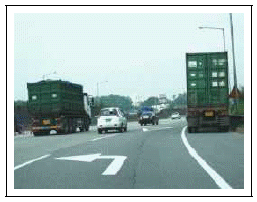
- 우측 전방의 화물차가 갑자기 진입할 수 있으므로 경음기를 사용하며 속도를 높인다.
- 신속하게 본선차로로 차로를 변경한다.
- 본선 후방에서 진행하는 차에 주의하면서 차로를 변경한다.
- 속도를 높여 본선차로에 진행하는 차의 앞으로 재빠르게 차로를 변경한다.
- 우측 전방에 주차된 화물차의 앞 상황에 주의하며 진행한다.
(정답률: 53%)
35. 다음과 같은 지하차도 부근에서 금지되는 운전행동 2가지는? (답이 두개인 문제입니다. 정답은 1, 5번 입니다. 여기서는 1번을 누르면 정답 처리 됩니다.)
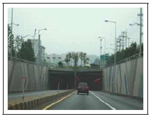
- 앞지르기
- 전조등 켜기
- 차폭등 및 미등 켜기
- 경음기 사용
- 차로변경
(정답률: 52%)
36. 다음 상황에서 안전한 진출방법 2가지는? (답이 두개인 문제입니다. 정답은 1, 4번 입니다. 여기서는 1번을 누르면 정답 처리 됩니다.)
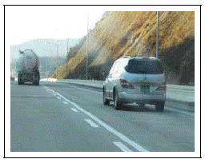
- 우측 방향지시등으로 신호하고 안전을 확인한 후 차로를 변경한다.
- 주행차로에서 서행으로 진행한다.
- 주행차로에서 충분히 가속한 후 진출부 바로 앞에서 빠져 나간다.
- 감속차로를 이용하여 서서히 감속하여 진출부로 빠져 나간다.
- 우측 승합차의 앞으로 나아가 감속차로로 진입한다.
(정답률: 56%)
37. 편도 2차로 고속도로를 진행 중이다. 안전한 운전방법 2가지는? (답이 두개인 문제입니다. 정답은 1, 2번 입니다. 여기서는 1번을 누르면 정답 처리 됩니다.)
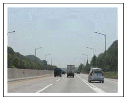
- 전방의 화물차와 충분한 안전거리를 확보한다.
- 우측 차로의 승용차가 합류할 수 있으므로 속도를 줄인다.
- 전방 화물차를 앞지르기 위해서 우측 승용차 앞으로 차로변경을 한다.
- 합류도로 근처이므로 안전거리를 확보할 필요가 없다.
- 우측 차로의 승용차가 진입할 수 없도록 전방 화물차와 거리를 좁힌다.
(정답률: 54%)
38. 전방의 저속화물차를 앞지르기 하고자 한다. 안전한 운전 방법 2가지는? (답이 두개인 문제입니다. 정답은 3, 4번 입니다. 여기서는 3번을 누르면 정답 처리 됩니다.)
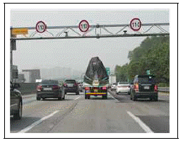
- 경음기나 상향등을 연속적으로 사용하여 앞차가양보하게 한다.
- 전방 화물차의 우측으로 신속하게 차로변경 후 앞지르기 한다.
- 좌측 방향지시등을 미리 켜고 안전거리를 확보한 후 좌측차로로 진입하여 앞지르기 한다.
- 좌측 차로에 차량이 많으므로 무리하게 앞지르기를 시도하지 않는다.
- 전방 화물차에 최대한 가깝게 다가간 후 앞지르기 한다.
(정답률: 56%)
39. 자동차 전용도로에서 우측도로로 진출하고자 한다. 안전한 운전방법 2가지는? (답이 두개인 문제입니다. 정답은 3, 5번 입니다. 여기서는 3번을 누르면 정답 처리 됩니다.)
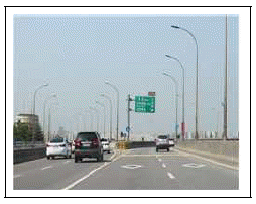
- 진출로를 지나친 경우 즉시 비상점멸등을 켜고 후진하여 진출로로 나간다.
- 급가속하며 우측 진출방향으로 차로를 변경한다.
- 우측 방향지시등을 켜고 안전거리를 확보하며 상황에 맞게 우측으로 진출한다.
- 진출로를 오인하여 잘못 진입한 경우 즉시 비상 점멸등을 켜고 후진하여 가고자 하는 차선으로 들어온다.
- 진출로에 진행차량이 보이지 않더라도 우측 방향지시등을 켜고 진입해야 한다.
(정답률: 53%)
40. 다음과 같은 상황에서 운전자의 올바른 판단 2가지는? (답이 두개인 문제입니다. 정답은 2, 3번 입니다. 여기서는 2번을 누르면 정답 처리 됩니다.)
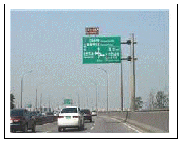
- 3차로를 주행하는 승용차와 차간거리를 충분히 둘 필요가 없다.
- 2차로를 주행하는 차량이 공항방향으로 진출하기 위해 3차로로 끼어들 것에 대비한다.
- 2차로를 주행하는 자동차가 앞차와의 충돌을 피하기 위해 3차로로 급진입할 것에 대비한다.
- 2차로의 자동차가 끼어들기 할 수 있으므로 3차로의 앞차와 거리를 좁혀야 한다.
- 2차로로 주행하는 승용차는 3차로로 절대 차로 변경하지 않을 것이라 믿는다.
(정답률: 51%)
3과목: 임의구분
41. 고속도로에서 운전 중인 다음 상황에서 가장 안전한 운전 방법 2가지는? (답이 두개인 문제입니다. 정답은 2, 3번 입니다. 여기서는 2번을 누르면 정답 처리 됩니다.)
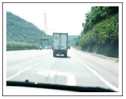
- 급차로 변경하여 가속한다.
- 앞 차량과의 추돌을 예방하기 위하여 안전거리를 확보한다.
- 안전을 확인한 후 차로를 변경한다.
- 서행하는 앞 차량으로 인해 시야 방해를 받지 않기 위해서 우측으로 앞지르기한다.
- 속도를 줄인 후 서행한다.
(정답률: 49%)
42. 다음 상황에서 가장 안전한 운전 방법 2가지는? (답이 두개인 문제입니다. 정답은 1, 5번 입니다. 여기서는 1번을 누르면 정답 처리 됩니다.)
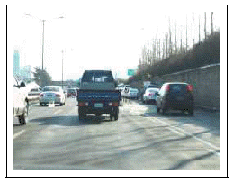
- 전방에 교통 정체 상황이므로 안전거리를 확보하며 주행한다.
- 상대적으로 진행이 원활한 차로로 변경한다.
- 음악을 듣거나 담배를 피운다.
- 내 차 앞으로 다른 차가 끼어들지 못하도록 앞차와의 거리를 좁힌다.
- 앞차의 급정지 상황에 대비해 전방 상황에 더욱 주의를 기울이며 주행한다.
(정답률: 44%)
43. 다음 상황에서 가장 안전한 운전 방법 2가지는? (답이 두개인 문제입니다. 정답은 4, 5번 입니다. 여기서는 4번을 누르면 정답 처리 됩니다.)
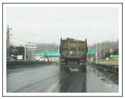
- 우측으로 앞지르기를 시도한다.
- 경음기를 울려 앞차를 3차로로 유도한 후 주행한다.
- 전조등을 번쩍거리며 차선을 준수토록 한다.
- 전방 상황을 알 수가 없으므로 시야가 확보될 때까지 안전거리를 유지한다.
- 대형차 앞의 상황을 알 수 없으므로 속도를 충분히 줄인다.
(정답률: 47%)
44. 고속도로를 주행 중이다. 가장 안전한 운전 방법 2가지는? (답이 두개인 문제입니다. 정답은 3, 4번 입니다. 여기서는 3번을 누르면 정답 처리 됩니다.)
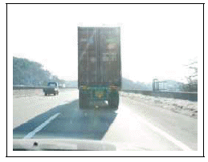
- 우측 방향 지시등을 켜고 우측으로 차로 변경 후 앞지르기한다.
- 앞서 가는 화물차와의 안전거리를 좁히면서 운전한다.
- 앞차를 앞지르기 위해 좌측 방향 지시등을 켜고 전후방의 안전을 살핀 후에 좌측으로 앞지르기 한다.
- 앞서 가는 화물차와의 안전거리를 충분히 유지하면서 운전한다.
- 경음기를 계속 울리며 빨리 가도록 재촉한다.
(정답률: 45%)
45. 눈이 녹은 교량 위의 다음 상황에서 가장 안전한 운전방법 2가지는? (답이 두개인 문제입니다. 정답은 3, 5번 입니다. 여기서는 3번을 누르면 정답 처리 됩니다.)
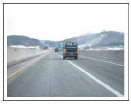
- 전방 우측의 앞차가 브레이크 페달을 밟아 감속하고 있으므로 정상적으로 앞지르기한다.
- 눈이 녹아 물기만 있고 얼어붙은 경우가 아니라면 별도로 감속하지 않는다.
- 교량 위에서는 사고 위험성이 크기 때문에 전방 우측의 앞차를 앞지르기하지 않는다.
- 2차로로 안전하게 차로를 변경하여 진행한다.
- 결빙된 구간 등에 주의하며 감속하여 주행한다.
(정답률: 42%)
46. 다음 중 고속도로에서 안전하게 진출하는 방법 2가지는? (답이 두개인 문제입니다. 정답은 1, 5번 입니다. 여기서는 1번을 누르면 정답 처리 됩니다.)
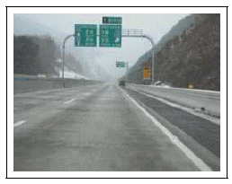
- 방향지시등을 이용하여 진출의사를 표시한다.
- 진출로를 지나간 경우 즉시 후진하여 빠져나간다.
- 진출로가 가까워졌으므로 백색 실선으로 표시된 우측 갓길로 미리 주행해 나간다.
- 노면 상태가 양호하므로 속도를 높여 신속히 빠져나간다.
- 진출로를 지나치지 않도록 주의하면서 주행한다.
(정답률: 49%)
47. 고속도로를 장시간 운전하여 졸음이 오는 상황이다. 가장 안전한 운전방법 2가지는? (답이 두개인 문제입니다. 정답은 1, 5번 입니다. 여기서는 1번을 누르면 정답 처리 됩니다.)
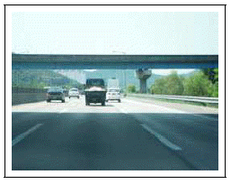
- 가까운 휴게소에 들어가서 휴식을 취한다.
- 졸음 방지를 위해 차로를 자주 변경한다.
- 갓길에 차를 세우고 잠시 휴식을 취한다.
- 졸음을 참으면서 속도를 높여 빨리 목적지까지 운행한다.
- 창문을 열어 환기하고 가까운 휴게소가 나올때까지 안전한 속도로 운전한다.
(정답률: 51%)
48. 다음 상황에서 가장 안전한 운전방법 2가지는? (답이 두개인 문제입니다. 정답은 2, 3번 입니다. 여기서는 2번을 누르면 정답 처리 됩니다.)
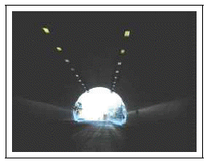
- 터널 밖의 상황을 잘 알 수 없으므로 터널을 빠져나오면서 속도를 높인다.
- 터널을 통과하면서 강풍이 불 수 있으므로 핸들을 두 손으로 꽉 잡고 운전한다.
- 터널 내에서 충분히 감속하며 주행한다.
- 터널 내에서 가속을 하여 가급적 앞차를 바싹 뒤따라간다.
- 터널 내에서 차로를 변경하여 가고 싶은 차로를 선택한다.
(정답률: 45%)
49. 다음과 같이 고속도로 요금소 하이패스 차로를 이용하여 통과하려고 할 때 가장 안전한 운전방법 2가지는? (답이 두개인 문제입니다. 정답은 3, 5번 입니다. 여기서는 3번을 누르면 정답 처리 됩니다.)
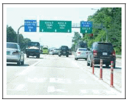
- 하이패스 전용차로 이용 시 영업소 도착 직전에 비어 있는 하이패스 전용차로로 차로변경 한다.
- 하이패스 이용차량이 아닌 경우에도 하이패스 전용차로의 소통이 원활하므로 영업소 입구까지 하이패스 전용차로로 주행한 뒤 차로변경 한다.
- 하이패스 이용차량은 앞차의 감속에 대비하여 시속 30킬로미터 이하의 속도로 안전거리를 유지하며 진입한다.
- 하이패스 이용차량은 영업소 통과 시 정차할 필요가 없으므로 앞차와의 안전거리를 확보하지 않고 빠른 속도로 주행한다.
- 하이패스 전용차로를 이용하지 않는 차량은 미리 다른 차로로 차로를 변경한다.
(정답률: 45%)
50. 다리 위를 주행하는 중 강한 바람이 불어와 차체가 심하게 흔들릴 경우 가장 안전한 운전방법 2가지는? (답이 두개인 문제입니다. 정답은 2, 4번 입니다. 여기서는 2번을 누르면 정답 처리 됩니다.)
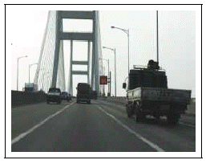
- 빠른 속도로 주행한다.
- 감속하여 주행한다.
- 핸들을 느슨히 잡는다.
- 핸들을 평소보다 꽉 잡는다.
- 빠른 속도로 주행하되 핸들을 꽉 잡는다.
(정답률: 43%)
51. 다음 상황에서 가장 안전한 운전 방법 2가지는? (답이 두개인 문제입니다. 정답은 2, 3번 입니다. 여기서는 2번을 누르면 정답 처리 됩니다.)
- 차로를 변경하지 않고 현재 속도를 유지하면서 통과한다.
- 미끄러지지 않도록 감속 운행한다.
- 장애인 전동차가 갑자기 방향을 바꿀 수 있으므로 주의한다.
- 전방 우측에 정차 중인 버스 옆을 신속하게 통과한다.
- 별다른 위험이 없어 속도를 높인다.
(정답률: 46%)
52. 전방 정체 중인 교차로에 접근 중이다. 가장 안전한 운전 방법 2가지는? (답이 두개인 문제입니다. 정답은 3, 5번 입니다. 여기서는 3번을 누르면 정답 처리 됩니다.)
- 차량 신호등이 녹색이므로 계속 진행한다.
- 횡단보도를 급히 지나 앞차를 따라서 운행한다.
- 정체 중이므로 교차로 직전 정지선에 일시정지한다.
- 보행자에게 빨리 지나가라고 손으로 알린다.
- 보행자의 움직임에 주의한다.
(정답률: 45%)
53. 다음 상황에서 가장 안전한 운전방법 2가지는? (답이 두개인 문제입니다. 정답은 1, 4번 입니다. 여기서는 1번을 누르면 정답 처리 됩니다.)
- 작업 중인 건설 기계나 작업 보조자가 갑자기 도로로 진입할 수 있으므로 대비한다.
- 도로변의 작업 차량보다 도로를 통행하는 차가 우선권이 있으므로 경음기를 사용하여 주의를 주며 그대로 통과한다.
- 건설 기계가 도로에 진입할 경우 느린 속도로 뒤따라 가야하므로 빠른 속도로 진행해 나간다.
- 어린이 보호구역이 시작되는 구간이므로 시속 30킬로미터 이내로 서행하여 갑작스러운 위험에 대비한다.
- 어린이 보호구역의 시작 구간이지만 도로에 어린이가 없으므로 현재 속도를 유지한다.
(정답률: 46%)
54. 어린이 보호구역에 대한 설명 중 맞는 2가지는? (정답은 2, 5번 입니다. 여기서는 2번을 누르면 정답 처리 됩니다.)
- 어린이 보호구역에서 자동차의 통행속도는 시속 50킬로미터 이내로 제한된다.
- 교통사고의 위험으로부터 어린이를 보호하기 위해 어린이 보호구역을 지정할 수 있다.
- 어린이 보호구역에서는 주ㆍ정차가 허용된다.
- 어린이 보호구역에서는 어린이들이 주의하기 때문에 사고가 발생하지 않는다.
- 통행속도를 준수하고 어린이의 안전에 주의하면서 운행하여야 한다.
(정답률: 41%)
55. 다음 상황에서 가장 안전한 운전방법 2가지는? (답이 두개인 문제입니다. 정답은 1, 2번 입니다. 여기서는 1번을 누르면 정답 처리 됩니다.)
- 시속 30킬로미터 이하로 서행한다.
- 주ㆍ정차를 해서는 안 된다.
- 내리막길이므로 빠르게 주행한다.
- 주차는 할 수 없으나 정차는 할 수 있다.
- 횡단보도를 통행할 때는 경음기를 사용하며 주행한다.
(정답률: 42%)
56. 어린이 보호구역의 지정에 대한 설명으로 가장 옳은 것 2가지는? (답이 두개인 문제입니다. 정답은 2, 3번 입니다. 여기서는 2번을 누르면 정답 처리 됩니다.)
- 어린이 보호구역에서 자동차의 통행속도는 시속 60킬로미터 이하이다.
- 유치원 시설의 주변도로를 어린이 보호구역으로 지정할 수 있다.
- 초등학교의 주변도로를 어린이 보호구역으로 지정할 수 있다.
- 특수학교의 주변도로는 어린이 보호구역으로 지정할 수 없다.
- 어린이 보호구역으로 지정된 어린이집 주변 도로에서 통행 속도는 시속 10킬로미터 이하로 해야 한다.
(정답률: 36%)
57. 학교 앞 횡단보도 부근에서 지켜야 하는 내용으로 맞는 2가지는? (답이 두개인 문제입니다. 정답은 2, 5번 입니다. 여기서는 2번을 누르면 정답 처리 됩니다.)
- 차의 통행이 없는 때 주차는 가능하다.
- 보행자의 움직임에 주의하면서 전방을 잘 살핀다.
- 제한속도보다 빠르게 진행한다.
- 차의 통행에 관계없이 정차는 가능하다.
- 보행자가 횡단할 때에는 일시정지한다.
(정답률: 57%)
58. 다음 상황에서 가장 안전한 운전방법 2가지는? (답이 두개인 문제입니다. 정답은 3, 5번 입니다. 여기서는 3번을 누르면 정답 처리 됩니다.)
- 비어있는 차로로 속도를 높여 통과한다.
- 별다른 위험이 없으므로 다른 차들과 같이 통과한다.
- 노면표시에 따라 주행속도를 줄이며 진행한다.
- 보행자가 갑자기 뛰어 나올 수 있으므로 경음기를 사용하면서 통과한다.
- 다른 차에 가려서 안 보일 수 있는 보행자 등에 주의한다.
(정답률: 47%)
59. 다음 상황에서 가장 안전한 운전 방법 2가지는? (답이 두개인 문제입니다. 정답은 1, 3번 입니다. 여기서는 1번을 누르면 정답 처리 됩니다.)
- 차로를 변경하기 어려울 경우 버스 뒤에 잠시 정차하였다가 버스의 움직임을 보며 진행한다.
- 하차하는 승객이 갑자기 차도로 뛰어들 수 있으므로 급정지한다.
- 뒤따르는 차량과 버스에서 하차하는 승객들의 움직임을 살피는 등 안전을 확인하며 주행한다.
- 다른 차량들의 움직임을 살펴보고 별 문제가 없으면 버스를 그대로 앞질러 주행한다.
- 경음기를 울려 주변에 주의를 환기하며 신속히 좌측 차로로 차로 변경을 한다.
(정답률: 45%)
60. 교차로에서 우회전을 하려는 상황이다. 가장 안전한 운전 방법 2가지는? (답이 두개인 문제입니다. 정답은 1, 4번 입니다. 여기서는 1번을 누르면 정답 처리 됩니다.)
- 우산을 쓴 보행자가 갑자기 횡단보도로 내려올 가능성이 있으므로 감속 운행한다.
- 보행자가 횡단을 마친 상태로 판단되므로 신속하게 우회전한다.
- 비오는 날은 되도록 앞차에 바싹 붙어 서행으로 운전한다.
- 도로변의 웅덩이에서 물이 튀어 피해를 줄 수 있으므로 주의 운전한다.
- 교차로에서 우회전을 할 때에는 브레이크 페달을 세게 밟는 것이 안전하다.
(정답률: 42%)
4과목: 임의구분
61. 다음 상황에서 가장 안전한 운전 방법 2가지는? (답이 두개인 문제입니다. 정답은 3, 5번 입니다. 여기서는 3번을 누르면 정답 처리 됩니다.)
- 경음기를 계속 울려 차가 접근하고 있음을 보행자에게 알린다.
- 보행자 뒤쪽으로 서행하며 진행해 나간다.
- 횡단보도 직전 정지선에 일시정지한다.
- 보행자가 신속히 지나가도록 전조등을 번쩍이면서 재촉한다.
- 보행자가 횡단을 완료한 것을 확인한 후 출발한다.
(정답률: 45%)
62. 다음과 같은 도로상황에서 가장 안전한 운전방법 2가지는? (답이 두개인 문제입니다. 정답은 1, 2번 입니다. 여기서는 1번을 누르면 정답 처리 됩니다.)
- 안전표지가 표시하는 속도를 준수한다.
- 어린이가 갑자기 뛰어 나올 수 있으므로 주위를 잘 살피면서 주행한다.
- 차량이 없으므로 도로우측에 주차할 수 있다.
- 어린이보호구역이라도 어린이가 없을 경우에는 일반도로와 같다.
- 어린이보호구역으로 지정된 구간은 위험하므로 신속히 통과한다.
(정답률: 38%)
63. 다음과 같은 어린이보호구역을 통과할 때 예측할 수 있는 가장 위험한 요소 2가지는? (답이 두개인 문제입니다. 정답은 4, 5번 입니다. 여기서는 4번을 누르면 정답 처리 됩니다.)
- 반대편 길 가장자리 구역에서 전기공사중인 차량
- 반대편 하위 차로에 주차된 차량
- 전방에 있는 차량의 급정지
- 주차된 차량 사이에서 뛰어나오는 보행자
- 진행하는 차로로 진입하려는 정차된 차량
(정답률: 47%)
64. 다음과 같은 도로상황에서 바람직한 통행방법 2가지는? (답이 두개인 문제입니다. 정답은 1, 2번 입니다. 여기서는 1번을 누르면 정답 처리 됩니다.)
- 노인이 길가장자리 구역을 보행하고 있으므로 미리 감속하면서 주의한다.
- 노인이 길가장자리 구역을 보행하고 있으므로 서행으로 통과한다.
- 노인이 2차로로 접근하지 않을 것으로 확신하고 그대로 주행한다.
- 노인에게 경음기를 울려 차가 지나가고 있음을 알리면서 신속히 주행한다.
- 1차로와 2차로의 중간을 이용하여 감속하지 않고 그대로 주행한다.
(정답률: 40%)
65. 다음과 같은 도로를 통행할 때 주의사항에 대한 설명으로 올바른 것 2가지는? (답이 두개인 문제입니다. 정답은 1, 2번 입니다. 여기서는 1번을 누르면 정답 처리 됩니다.)
- 노인보호구역임을 알리고 있으므로 미리 충분히 감속하여 안전에 주의한다.
- 노인보호구역은 보행하는 노인이 보이지 않더라도 서행으로 주행한다.
- 노인보호구역이라도 건물 앞에서만 서행으로 주행한다.
- 안전을 위하여 가급적 앞 차의 후미를 바싹 따라 주행한다.
- 속도를 높여 신속히 노인보호구역을 벗어난다.
(정답률: 39%)
66. 다음 상황에서 가장 안전한 운전 방법 2가지는? (답이 두개인 문제입니다. 정답은 2, 4번 입니다. 여기서는 2번을 누르면 정답 처리 됩니다.)
- 손수레 뒤에 바싹 붙어서 경음기를 울린다.
- 손수레와 거리를 두고 서행한다.
- 손수레도 후방 교통 상황을 알고 있다고 생각하고 빠르게 지나간다.
- 다른 교통에 주의하면서 차로를 변경한다.
- 손수레와 동일 차로 내의 좌측 공간을 이용하여 앞지르기한다.
(정답률: 44%)
67. 다음과 같은 눈길 상황에서 가장 안전한 운전방법 2가지는? (답이 두개인 문제입니다. 정답은 1, 3번 입니다. 여기서는 1번을 누르면 정답 처리 됩니다.)
- 급제동, 급핸들 조작을 하지 않는다.
- 전조등을 이용하여 마주 오는 차에게 주의를 주며 통과한다.
- 앞차와 충분한 안전거리를 두고 주행한다.
- 경음기를 사용하며 주행한다.
- 앞차를 따라서 빠르게 통과한다.
(정답률: 46%)
68. 다음과 같은 상황에서 자동차의 통행 방법으로 올바른 2가지는? (답이 두개인 문제입니다. 정답은 2, 5번 입니다. 여기서는 2번을 누르면 정답 처리 됩니다.)
- 좌측도로의 화물차는 우회전하여 긴급자동차대열로 끼어든다.
- 모든 차량은 긴급자동차에게 차로를 양보해야한다.
- 긴급자동차 주행과 관계없이 진행신호에 따라 주행한다.
- 긴급자동차를 앞지르기하여 신속히 진행 한다.
- 좌측도로의 화물차는 긴급자동차가 통과할 때까지 기다린다.
(정답률: 49%)
69. 긴급자동차가 출동 중인 경우 가장 바람직한 운전방법 2가지는? (답이 두개인 문제입니다. 정답은 2, 3번 입니다. 여기서는 2번을 누르면 정답 처리 됩니다.)
- 긴급자동차와 관계없이 신호에 따라 주행 한다.
- 긴급자동차가 신속하게 진행할 수 있도록 차로를 양보한다.
- 반대편 도로의 버스는 좌회전 신호가 켜져도 일시 정지하여 긴급자동차에 양보한다.
- 모든 자동차는 긴급자동차에게 차로를 양보할 필요가 없다.
- 긴급자동차의 주행 차로에 일시정지한다.
(정답률: 45%)
70. 다음 상황에서 운전자의 가장 바람직한 운전방법 2가지는? (답이 두개인 문제입니다. 정답은 1, 2번 입니다. 여기서는 1번을 누르면 정답 처리 됩니다.)
- 회전중인 승용차는 긴급자동차가 회전차로에 진입하려는 경우 양보한다.
- 긴급자동차에게 차로를 양보하기 위해 좌ㆍ우측으로 피하여 양보한다.
- 승객을 태운 버스는 차로를 양보 할 필요는 없다.
- 긴급자동차라도 안전지대를 가로질러 앞차를 앞지르기 할 수 없다.
- 안전한 운전을 위해 긴급자동차 뒤를 따라서 운행 한다.
(정답률: 47%)
71. 운전 중 자전거가 차량 앞쪽으로 횡단하려고 한다. 가장 안전한 운전방법 2가지는? (답이 두개인 문제입니다. 정답은 4, 5번 입니다. 여기서는 4번을 누르면 정답 처리 됩니다.)
- 차에서 내려 자전거 운전자에게 횡단보도를 이용하라고 주의를 준다.
- 주행하면서 경음기를 계속 울려 자전거 운전자에게 경각심을 준다.
- 자전거가 진입하지 못하도록 차량을 버스 뒤로 바싹 붙인다.
- 일시정지하여 자전거가 안전하게 횡단하도록한다.
- 차량 좌측에 다른 차량이 주행하고 있으면 수 신호 등으로 위험을 알려 정지시킨다.
(정답률: 44%)
72. 다음 상황에서 가장 안전한 운전 방법 2가지는? (답이 두개인 문제입니다. 정답은 2, 3번 입니다. 여기서는 2번을 누르면 정답 처리 됩니다.)
- 경음기를 울려 자전거를 우측으로 피양하도록 유도한 후 자전거 옆으로 주행한다.
- 눈이 와서 노면이 미끄러우므로 급제동은 삼가야 한다.
- 좌로 급하게 굽은 오르막길이고 노면이 미끄러우므로 자전거와 안전거리를 유지하고 서행한다.
- 반대 방향에 마주 오는 차량이 없으므로 반대 차로로 주행한다.
- 신속하게 자전거를 앞지르기한다.
(정답률: 48%)
73. 다음 상황에서 가장 안전한 운전방법 2가지는? (답이 두개인 문제입니다. 정답은 2, 4번 입니다. 여기서는 2번을 누르면 정답 처리 됩니다.)
- 경음기를 지속적으로 사용해서 보행자의 길 가장자리 통행을 유도한다.
- 주차된 차의 문이 갑자기 열리는 것에도 대비하여 일정 거리를 유지하면서 서행한다.
- 공회전을 강하게 하여 보행자에게 두려움을 갖게 하면서 진행한다.
- 보행자나 자전거가 전방에 가고 있을 때에는 이어폰을 사용하는 경우도 있기 때문에 거리를 유지하며 서행한다.
- 전방의 보행자와 자전거가 길 가장자리로 피하게 되면 빠른 속도로 빠져나간다.
(정답률: 33%)
74. 두 대의 차량이 합류 도로로 진입 중이다. 가장 안전한 운전방법 2가지는? (답이 두개인 문제입니다. 정답은 1, 3번 입니다. 여기서는 1번을 누르면 정답 처리 됩니다.)
- 차량 합류로 인해 뒤따르는 이륜차가 넘어질 수 있으므로 이륜차와 충분한 거리를 두고 주행한다.
- 이륜차는 긴급 상황에 따른 차로 변경이 쉽기때문에 내 차와 충돌 위험성은 없다.
- 합류 도로에서는 차가 급정지할 수 있어 앞차와의 거리를 충분하게 둔다.
- 합류 도로에서 차로가 감소되는 쪽에서 끼어드는 차가 있을 경우 경음기를 사용하면서 같이 주행한다.
- 신호등 없는 합류 도로에서는 운전자가 주의 하고 있으므로 교통사고의 위험성이 없다.
(정답률: 46%)
75. 다음과 같은 상황에서 우회전하려고 한다. 가장 안전한 운전방법 2가지는? (답이 두개인 문제입니다. 정답은 4, 5번 입니다. 여기서는 4번을 누르면 정답 처리 됩니다.)
- 신속하게 우회전하여 자전거와의 충돌 위험으로부터 벗어난다.
- 경음기를 울려 자전거가 최대한 도로 가장자리로 통행하도록 유도한다.
- 우회전 시 뒷바퀴보다도 앞바퀴가 길 가장자리선을 넘으면서 사고를 야기할 가능성이 높다.
- 우측 자전거가 마주 오는 자전거를 피하기 위해 차도 안쪽으로 들어올 수 있어 감속한다.
- 우회전 시 보이지 않는 좌측 도로에서 직진하는 차량 및 자전거와의 안전거리를 충분히 두고 진행한다.
(정답률: 38%)
76. 1ㆍ2차로를 걸쳐서 주행 중이다. 이때 가장 안전한 운전 방법 2가지는? (답이 두개인 문제입니다. 정답은 2, 5번 입니다. 여기서는 2번을 누르면 정답 처리 됩니다.)
- 1차로로 차로 변경 후 신속히 통과한다.
- 우측 보도에서 횡단보도로 진입하는 보행자가 있는지를 확인한다.
- 경음기를 울려 자전거 운전자가 신속히 통과하도록 한다.
- 자전거는 보행자가 아니므로 자전거 뒤쪽으로 통과한다.
- 정지선 직전에 일시정지한다.
(정답률: 40%)
77. 전방 교차로에서 우회전하기 위해 신호대기 중이다. 가장 안전한 운전 방법 2가지는? (답이 두개인 문제입니다. 정답은 2, 5번 입니다. 여기서는 2번을 누르면 정답 처리 됩니다.)
- 길가장자리구역을 통하여 우회전한다.
- 앞차를 따라 서행하면서 우회전한다.
- 교차로 안쪽이 정체되어 있더라도 차량 신호가 녹색 신호인 경우 일단 진입한다.
- 전방 우측의 자전거 운전자와 보행자에게 계속 경음기를 울리며 우회전한다.
- 전방 우측의 자전거 및 보행자와의 안전거리를 두고 우회전한다.
(정답률: 45%)
78. 다음 상황에서 가장 안전한 운전 방법 2가지는? (답이 두개인 문제입니다. 정답은 2, 5번 입니다. 여기서는 2번을 누르면 정답 처리 됩니다.)
- 도로 폭이 넓어 충분히 빠져나갈 수 있으므로 그대로 통과한다.
- 서행하면서 자전거의 움직임에 주의한다.
- 자전거와 교행 시 가속 페달을 밟아 신속하게 통과한다.
- 경음기를 계속 울려 자전거 운전자에게 경각심을 주면서 주행한다.
- 자전거와 충분한 간격을 유지하면서 충돌하지 않도록 주의한다.
(정답률: 41%)
79. 다음 상황에서 가장 안전한 운전 방법 2가지는? (답이 두개인 문제입니다. 정답은 2, 3번 입니다. 여기서는 2번을 누르면 정답 처리 됩니다.)
- 자전거가 차도로 진입하지 않은 상태이므로 가속하여 신속하게 통과한다.
- 자전거가 횡단보도에 진입할 것에 대비해 일시정지한다.
- 자전거가 안전하게 횡단한 후 통과한다.
- 1차로로 급차로 변경하여 신속하게 통과한다.
- 자전거를 타고 횡단보도를 횡단하면 보행자로 보호받지 못하므로 그대로 통과한다.
(정답률: 36%)
80. 자전거 옆을 통과하고자 할 때 가장 안전한 운전 방법 2가지는? (답이 두개인 문제입니다. 정답은 2, 3번 입니다. 여기서는 2번을 누르면 정답 처리 됩니다.)
- 연속적으로 경음기를 울리면서 통과한다.
- 자전거와의 안전거리를 충분히 유지한다.
- 자전거가 갑자기 도로의 중앙으로 들어올 수 있으므로 서행한다.
- 자전거와의 안전거리를 좁혀 빨리 빠져나간다.
- 대형차가 오고 있을 경우에는 전조등으로 주의를 주며 통과한다.
(정답률: 46%)
5과목: 임의구분
81. 다음 상황에서 가장 안전한 운전방법 2가지는? (답이 두개인 문제입니다. 정답은 1, 5번 입니다. 여기서는 1번을 누르면 정답 처리 됩니다.)
- 트럭 앞의 상황을 알 수 없으므로 서행한다.
- 트럭이 좌회전하므로 연이어 진입해서 통과한다.
- 일단 진입하면서 우측 이륜차에 주의하며 진행한다.
- 속도를 높여 트럭 우측 편으로 진행한다.
- 교차로 좌우 도로의 상황에 주의한다.
(정답률: 39%)
82. 승합차를 바싹 뒤따라 우회전하는 경우 예상되는 위험 2가지는? (답이 두개인 문제입니다. 정답은 3, 5번 입니다. 여기서는 3번을 누르면 정답 처리 됩니다.)
- 승합차는 급제동을 함부로 하지 않으므로오히려 안전하다.
- 앞차의 제동등만 주시하면 대처가 빨리되므로 위험이 없다.
- 승합차로 인한 시야 제한으로 전방 상황 대처가 어렵다.
- 운전에 자신이 있으면 위험 대처가 빠르므로 문제없다.
- 승합차 급정지 시 안전거리가 없어 추돌이우려된다.
(정답률: 48%)
83. 다음 상황에서 우회전할 때 가장 안전한 운전방법 2가지는? (답이 두개인 문제입니다. 정답은 4, 5번 입니다. 여기서는 4번을 누르면 정답 처리 됩니다.)
- 우회전하는 트레일러는 속도가 느리므로 트레일러 좌측으로 앞질러 우회전한다.
- 도로 폭이 충분하므로 트레일러를 우측으로 앞질러 간다.
- 트레일러가 교차로 바깥쪽으로 방향 전환을 하고 있어 공간이 넓으므로 트레일러와 옆으로 나란히 우회전한다.
- 도로 폭이 넓어도 트레일러가 우회전하기에는 충분하지 않으므로 안전거리를 두고 천천히 뒤따라간다.
- 트레일러가 내륜차(內輪差)로 인해 크게 회전하는 것이므로 진입하지 않고 뒤따라 간다.
(정답률: 46%)
84. 다음 상황에서 직진할 때 가장 안전한 운전방법 2가지는? (답이 두개인 문제입니다. 정답은 2, 5번 입니다. 여기서는 2번을 누르면 정답 처리 됩니다.)
- 1차로의 승용차가 내 차량 진행 방향으로 급차로 변경할 수 있으므로 앞차와 의 간격을 좁힌다.
- 택시가 손님을 태우기 위하여 급정지할 수도 있으므로 일정한 거리를 유지한다.
- 승용차와 택시 때문에 전방 상황이 잘 안보이므로 1, 2차로 중간에 걸쳐서 주행한다.
- 택시가 손님을 태우기 위해 정차가 예상되므로 신속히 1차로로 급차로 변경한다.
- 택시가 우회전하기 위하여 감속할 수도 있으므로 미리 속도를 감속하여 뒤따른다.
(정답률: 41%)
85. 다음과 같이 비보호좌회전 교차로에서 좌회전할 경우 가장 위험한 요인 2가지는? (답이 두개인 문제입니다. 정답은 3, 4번 입니다. 여기서는 3번을 누르면 정답 처리 됩니다.)
- 반대 차로 승용차의 좌회전
- 뒤따르는 승용차와의 추돌 위험
- 보행자 보호를 위한 화물차의 횡단보도 앞 일시정지
- 반대 방향에서 직진하는 차량과 내 차의 충돌 위험
- 뒤따르는 승용차의 앞지르기
(정답률: 37%)
86. 다음 교차로를 우회전하려고 한다. 가장 안전한 운전방법 2가지는? (답이 두개인 문제입니다. 정답은 1, 4번 입니다. 여기서는 1번을 누르면 정답 처리 됩니다.)
- 버스 승객들이 하차 중이므로 일시정지한다.
- 버스로 인해 전방 상황을 확인할 수 없으므로 시야 확보를 위해서 신속히 우회전한다.
- 버스가 갑자기 출발할 수 있으므로 중앙선을 넘어 우회전한다.
- 버스에서 하차한 사람들이 버스 앞쪽으로 갑자기 횡단할 수도 있으므로 주의한다.
- 버스에서 하차한 사람들이 버스 뒤쪽으로 횡단을 할 수 있으므로 반대 차로를 이용하여 우회전한다.
(정답률: 39%)
87. 황색 점멸등이 설치된 교차로에서 우회전하려 할 때 가장 위험한 요인 2가지는? (답이 두개인 문제입니다. 정답은 1, 5번 입니다. 여기서는 1번을 누르면 정답 처리 됩니다.)
- 전방 반대 차로에서 좌회전을 시도하는 화물차
- 우측 도로에서 우회전을 시도하는 승용차
- 좌회전 대기 중인 승용차
- 후사경 속 승용차
- 3차로 진행 중인 이륜차
(정답률: 32%)
88. 직진 중 전방 차량 신호가 녹색 신호에서 황색 신호로 바뀌었다. 가장 위험한 상황 2가지는? (답이 두개인 문제입니다. 정답은 1, 2번 입니다. 여기서는 1번을 누르면 정답 처리 됩니다.)
- 급제동 시 뒤차가 내 차를 추돌할 위험이 있다.
- 뒤차를 의식하다가 내 차가 신호 위반 사고를 일으킬 위험이 있다.
- 뒤차가 앞지르기를 할 위험이 있다.
- 우측 차가 내 차 뒤로 끼어들기를 할 위험이 있다.
- 우측 도로에서 신호 대기 중인 차가 갑자기 유턴할 위험이 있다.
(정답률: 36%)
89. 다음 상황에서 가장 안전한 운전방법 2가지는? (답이 두개인 문제입니다. 정답은 3, 5번 입니다. 여기서는 3번을 누르면 정답 처리 됩니다.)
- 진행하는 방향의 도로가 넓어 우선권이 있으므로 좌ㆍ우측의 좁은 도로에서 진입하는 차량보다 먼저 교차로를 통과한다.
- 신호등이 없으므로 안전을 위하여 교차로를 신속히 통과한다.
- 정지선 직전에 일시정지하여 좌우 안전을 확인한 후 진행한다.
- 전방 횡단보도에 보행자가 없으므로 신속히 횡단보도를 통과한다.
- 전방의 횡단보도 부근에서 무단 횡단하는 보행자가 있을 수 있으므로 주의한다.
(정답률: 41%)
90. 다음 상황에서 비보호좌회전할 때 가장 큰 위험 요인 2가지는? (답이 두개인 문제입니다. 정답은 1, 3번 입니다. 여기서는 1번을 누르면 정답 처리 됩니다.)
- 반대편 2차로에서 승합차에 가려 보이지 않는 차량이 빠르게 직진해 올 수 있다.
- 반대편 1차로 승합차 뒤에 차량이 정지해 있을 수 있다.
- 좌측 횡단보도로 보행자가 횡단을 할 수 있다.
- 후방 차량이 갑자기 불법 유턴을 할 수 있다.
- 반대편 1차로에서 승합차가 비보호좌회전을 할 수 있다.
(정답률: 35%)
91. 다음 상황에서 가장 안전한 운전 방법 2가지는? (답이 두개인 문제입니다. 정답은 2, 5번 입니다. 여기서는 2번을 누르면 정답 처리 됩니다.)
- 교차로 진입 전에 황색 신호가 켜지면 신속히 교차로를 통과하도록 한다.
- 속도가 빠를 경우 황색 신호가 켜졌을 때 정지하기 어려우므로 속도를 줄여 황색신호에 대비한다.
- 신호가 언제 바뀔지 모르므로 속도를 높여 신호가 바뀌기 전에 통과하도록 노력한다.
- 뒤차가 가까이 따라올 수 있으므로 속도를 높여 신속히 교차로를 통과한다.
- 1차로에서 2차로로 갑자기 차로를 변경하는 차가 있을 수 있으므로 속도를 줄여 대비한다.
(정답률: 41%)
92. 다음 상황에서 유턴하기 위해 차로를 변경하려고 한다. 가장 안전한 운전방법 2가지는? (답이 두개인 문제입니다. 정답은 2, 5번 입니다. 여기서는 2번을 누르면 정답 처리 됩니다.)
- 1차로가 비었으므로 신속히 1차로로 차로를 변경한다.
- 차로변경하기 전 30미터 이상의 지점에서 좌측 방향지시등을 켠다.
- 전방의 횡단보도에 보행자가 있는지 살핀다.
- 안전지대를 통해 미리 1차로로 들어간다.
- 왼쪽 후사경을 통해 안전지대로 진행해 오는 차가 없는지 살핀다.
(정답률: 33%)
93. 다음 교차로에서 우회전하려고 한다. 가장 안전한 운전방법 2가지는? (답이 두개인 문제입니다. 정답은 4, 5번 입니다. 여기서는 4번을 누르면 정답 처리 됩니다.)
- 경음기를 반복하여 사용한다.
- 음악을 듣고 있기 때문에 전조등을 번쩍인다.
- 자전거를 앞지르며 우회전한다.
- 자전거를 먼저 통과시킨 후 우회전한다.
- 자전거와 충분한 안전거리를 유지하면서 서행한다.
(정답률: 37%)
94. 다음 도로상황에서 가장 위험한 요인 2가지는? (답이 두개인 문제입니다. 정답은 1, 4번 입니다. 여기서는 1번을 누르면 정답 처리 됩니다.)
- 우측도로에서 우회전 하는 차와 충돌할 수 있다.
- 왼쪽 2차로로 진입한 차가 우회전할 수 있다.
- 반대편에서 우회전하는 차와 충돌할 수 있다.
- 반대편에서 미리 좌회전하는 차와 충돌 할 수 있다.
- 우측 후방에서 우회전하려고 주행하는 차와 충돌할 수 있다.
(정답률: 43%)
95. 다음 도로상황에서 가장 적절한 행동 2가지는? (답이 두개인 문제입니다. 정답은 1, 2번 입니다. 여기서는 1번을 누르면 정답 처리 됩니다.)
- 일시정지 후 주위 차량을 먼저 보낸 후 교차로를 통과한다.
- 교차로 통과 후 지구대나 경찰관서에 고장사실을 신고한다.
- 신호기가 고장이므로 진행하던 속도로 신속히 통과한다.
- 신호기가 고장 난 교차로는 통과할 수 없으므로 유턴해서 돌아간다.
- 먼저 진입하려는 차량이 있으면 전조등을 번쩍이며 통과한다.
(정답률: 37%)
96. 다음 상황에서 가장 안전한 운전방법 2가지는? (답이 두개인 문제입니다. 정답은 2, 4번 입니다. 여기서는 2번을 누르면 정답 처리 됩니다.)
- 신호등 없는 교차로이기 때문에 무조건 진입한다.
- 정지선 직전에 일시정지하다.
- 앞차가 빨리 진행할 수 있도록 계속 경음기를 울린다.
- 우측 앞차가 끼어들기 할 수 있으므로 안전에 유의한다.
- 중앙선을 넘어 맞은편 차로로 주행한다.
(정답률: 44%)
97. 다음 상황에서 가장 안전한 운전방법 2가지는? (답이 두개인 문제입니다. 정답은 1, 5번 입니다. 여기서는 1번을 누르면 정답 처리 됩니다.)
- 속도를 낮춰 화물차와의 안전거리를 유지한다.
- 화물차 앞으로 앞지르기 한 후 급정지한다.
- 우측 차로로 급차로 변경한다.
- 속도를 높여 화물차를 앞지르기한다.
- 비상점멸등을 켜서 뒤차에게 위험한 상황을 알린다.
(정답률: 47%)
98. 다음 상황에서 가장 안전한 운전방법 2가지는? (답이 두개인 문제입니다. 정답은 3, 4번 입니다. 여기서는 3번을 누르면 정답 처리 됩니다.)
- 진입하는 승용차가 우선이므로 보행자가 횡단하지 못하도록 경음기를 울린다.
- 진입차량이 우선이므로 빠른 속도로 진입한다.
- 횡단보도 전에 정지 후 보행자가 횡단하도록 한다.
- 회전차량이 우선이므로 회전차량이 지나고 진입한다.
- 회전차량이 멈출 수 있도록 전조등을 점멸하면서 진입한다.
(정답률: 43%)
99. 야간에 주택가 도로를 시속 40킬로미터로 주행 중 횡단보도에 접근하고 있다. 가장 안전한 운전 방법 2가지는? (답이 두개인 문제입니다. 정답은 3, 5번 입니다. 여기서는 3번을 누르면 정답 처리 됩니다.)
- 보행자가 횡단이 끝나가므로 속도를 높여 통과한다.
- 보행자가 횡단이 끝나가므로 현재의 속도로 통과한다.
- 불빛으로 앞의 상황을 잘 알 수 없으므로 속도를 줄인다.
- 횡단하는 보행자가 있으므로 급제동한다.
- 뒤차가 접근하고 있으므로 비상점멸등을 켠다.
(정답률: 44%)
100. 중앙선을 넘어 불법 유턴을 할 경우, 사고 발생 가능성이 가장 높은 위험요인 2가지는? (답이 두개인 문제입니다. 정답은 2, 5번 입니다. 여기서는 2번을 누르면 정답 처리 됩니다.)
- 전방 우측 보도 위에서 휴대전화를 사용중인 보행자
- 우회전하려고 하는 좌측 도로의 차량
- 갑자기 우회전하려는 앞 차량
- 가장자리에 정차하려는 뒤쪽의 승용차
- 우측 도로에서 갑자기 불법으로 좌회전하려는 이륜차
(정답률: 40%)